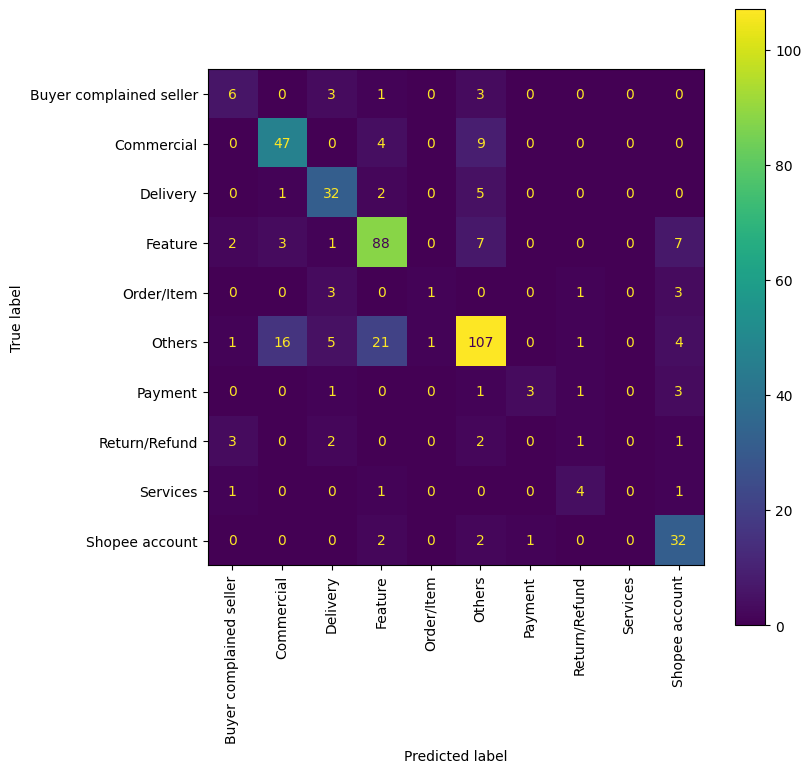

from that_nlp_library.text_transformation import *
from that_nlp_library.text_augmentation import *
from that_nlp_library.text_main import *Model Evaluations
This module contains some functions to evaluate your model in-depth
from underthesea import text_normalize
from functools import partial
from pathlib import Path
from importlib.machinery import SourceFileLoader
from transformers import DataCollatorWithPaddingSingle-head/Multi-head Classification
First, we will fully train and evaluate our model on a train/validation set
Load data
txt_tfms=[text_normalize]
over_nonown_tfm = partial(sampling_with_condition,query='Source=="non owned"',frac=0.5,seed=42,apply_to_all=False)
over_nonown_tfm.__name__ = 'Oversampling Non Owned'
over_own_tfm = partial(sampling_with_condition,query='Source=="owned"',frac=2,seed=42,apply_to_all=False)
over_own_tfm.__name__ = 'Oversampling Owned'
over_hc_tfm = partial(sampling_with_condition,query='Source=="hc search"',frac=2.5,seed=42,apply_to_all=False)
over_hc_tfm.__name__ = 'Oversampling HC search'
remove_accent_tfm = partial(remove_vnmese_accent,frac=1,seed=42,apply_to_all=True)
remove_accent_tfm.__name__ = 'Add No-Accent Text'
aug_tfms = [over_nonown_tfm,over_own_tfm,over_hc_tfm,remove_accent_tfm]DATA_PATH = Path('sample_data')
tdm = TextDataMain.from_csv(DATA_PATH/'sample_large.csv',
return_df=False,
main_content='Content',
metadatas='Source',
label_names='L1',
val_ratio=0.2,
split_cols='L1',
content_tfms = txt_tfms,
aug_tfms = aug_tfms,
process_metadatas=True,
seed=42,
shuffle_trn=True)
cache_dir=Path('./envibert_tokenizer')
tokenizer = SourceFileLoader("envibert.tokenizer",
str(cache_dir/'envibert_tokenizer.py')).load_module().RobertaTokenizer(cache_dir)----- Input Validation Precheck -----
DataFrame contains duplicated values!
-----> Number of duplications: 16 rowsmain_ddict= tdm.to_datasetdict(tokenizer,
max_length=512,
)-------------------- Start Main Text Processing --------------------
----- Metadata Simple Processing & Concatenating to Main Content -----
----- Label Encoding -----
-------------------- Text Transformation --------------------
----- text_normalize -----
-------------------- Train Test Split --------------------
Previous Validation Percentage: 20.009%
- Before leak check
Size: 454
- After leak check
Size: 447
- Number of rows leaked: 7, or 1.54% of the original validation (or test) data
Current Validation Percentage: 19.7%
-------------------- Text Augmentation --------------------
Train data size before augmentation: 1822
----- Oversampling Non Owned -----
Train data size after THIS augmentation: 2020
----- Oversampling Owned -----
Train data size after THIS augmentation: 2248
----- Oversampling HC search -----
Train data size after THIS augmentation: 2390
----- Add No-Accent Text -----
Train data size after THIS augmentation: 4780
Train data size after ALL augmentation: 4780
-------------------- Map Tokenize Function --------------------100%|█████████████████████████████████████| 2269/2269 [00:00<00:00, 3931.61it/s]
100%|████████████████████████████████████| 2390/2390 [00:00<00:00, 19307.67it/s]Define and train model
from that_nlp_library.models.roberta.classifiers import *
from that_nlp_library.model_main import *
from sklearn.metrics import f1_score, accuracy_score
import osos.environ['CUDA_VISIBLE_DEVICES'] = '0'from transformers.models.roberta.modeling_roberta import RobertaModelmodel_name='nguyenvulebinh/envibert'
envibert_body = RobertaModel.from_pretrained(model_name)Some weights of the model checkpoint at nguyenvulebinh/envibert were not used when initializing RobertaModel: ['lm_head.dense.weight', 'lm_head.dense.bias', 'lm_head.layer_norm.bias', 'lm_head.bias', 'lm_head.layer_norm.weight']
- This IS expected if you are initializing RobertaModel from the checkpoint of a model trained on another task or with another architecture (e.g. initializing a BertForSequenceClassification model from a BertForPreTraining model).
- This IS NOT expected if you are initializing RobertaModel from the checkpoint of a model that you expect to be exactly identical (initializing a BertForSequenceClassification model from a BertForSequenceClassification model).num_classes = len(tdm.label_lists[0])_model_kwargs={
# overall model hyperparams
'layer2concat':4,
'is_multilabel':tdm.is_multilabel, # False
'is_multihead':tdm.is_multihead, # False
'head_class_sizes':num_classes,
'head_class': ConcatHeadSimple,
# classfication head hyperparams
'classifier_dropout':0.1
}
model = model_init_classification(model_class = RobertaHiddenStateConcatForSequenceClassification,
cpoint_path = model_name,
output_hidden_states=True, # since we are not using 'hidden layer contatenation' technique
seed=42,
body_model=envibert_body,
model_kwargs = _model_kwargs)
metric_funcs = [partial(f1_score,average='macro'),accuracy_score] # we will use both f1_macro and accuracy score as metrics
controller = ModelController(model,tdm,metric_funcs)Loading body weights. This assumes the body is the very first first-layer block of your custom architecturelr = 8e-5
bs=4
wd=0.01
epochs= 2
controller.fit(epochs,lr,
batch_size=bs,
weight_decay=wd,
save_checkpoint=False,
compute_metrics=compute_metrics_classification,
)
[1194/1194 01:05, Epoch 1/2]
| Epoch | Training Loss | Validation Loss | F1 Score L1 | Accuracy Score L1 |
|---|---|---|---|---|
| 0 | No log | 0.933689 | 0.395291 | 0.695749 |
| 1 | No log | 0.942117 | 0.488467 | 0.706935 |
Generate predictions
We will do model evaluation on the validation set. You can also perform model evalution on the training set using similar approach
df_val = controller.predict_ddict(ds_type='validation')-------------------- Start making predictions --------------------df_val['label']= df_val['label'].apply(lambda x: tdm.label_lists[0][x]).valuesdf_val.head()| text | label | Source | pred_L1 | pred_prob_L1 | |
|---|---|---|---|---|---|
| 0 | google play - Chơi gam rất là lác | Feature | google play | Commercial | 0.751953 |
| 1 | google play - Zq | Others | google play | Others | 0.980518 |
| 2 | non owned - Làn sóng kỹ thuật số và sự lựa chọ... | Others | non owned | Others | 0.965513 |
| 3 | google play - Hàng quốc tế không còn ship COD ... | Payment | google play | Delivery | 0.923603 |
| 4 | google play - Quá tệ . Giao hàng chậm như rùa ... | Delivery | google play | Delivery | 0.919842 |
df_val.Source.value_counts()Source
google play 280
non owned 102
owned 25
ios 24
hc search 16
Name: count, dtype: int64Start the model evaluation
evaluate_classification_model_metadata
evaluate_classification_model_metadata (df:pandas.core.frame.DataFrame, metadatas:str|list, label_name:str, pred_name:str, metric_funcs:list)
| Type | Details | |
|---|---|---|
| df | pd.DataFrame | The main dataframe containing the predictions |
| metadatas | str | list | Metadata(s) to perform analysis |
| label_name | str | Label’s column name |
| pred_name | str | Prediction’s column name |
| metric_funcs | list | Metric(s) to calculate |
metric_funcs = [partial(f1_score,average='macro'),accuracy_score]evaluate_classification_model_metadata(df_val,metadatas='Source',
label_name='label',
pred_name='pred_L1',
metric_funcs=metric_funcs
)-------------------- label Analysis on metadata: Source --------------------
---------- Distribution ----------
count proportion
Source
google play 280 0.626398
non owned 102 0.228188
owned 25 0.055928
ios 24 0.053691
hc search 16 0.035794
---------- Metrics for each value in Source ----------
- For all data:
f1_score: 0.4952 . accuracy_score: 0.7092 .
- For google play:
f1_score: 0.4857 . accuracy_score: 0.6929 .
- For hc search:
f1_score: 0.4315 . accuracy_score: 0.6250 .
- For ios:
f1_score: 0.6736 . accuracy_score: 0.7083 .
- For non owned:
f1_score: 0.3407 . accuracy_score: 0.7647 .
- For owned:
f1_score: 0.4146 . accuracy_score: 0.7200 . show_top_n_predictions
show_top_n_predictions (df:pandas.core.frame.DataFrame, text_name:str, label_name:str, pred_name:str, prob_name:str, is_incorrect=True, ascending=False, n_show=10)
| Type | Default | Details | |
|---|---|---|---|
| df | pd.DataFrame | The main dataframe containing the predictions | |
| text_name | str | Text’s column name | |
| label_name | str | Label’s column name | |
| pred_name | str | Prediction’s column name | |
| prob_name | str | Prediction probability’s column name | |
| is_incorrect | bool | True | To show top correct or incorrect sentences |
| ascending | bool | False | To sort by prob_name ascendingly or descendingly |
| n_show | int | 10 | Number of sentences to show |
show_top_n_predictions(df_val,text_name='text',
label_name='label',
pred_name='pred_L1',
prob_name='pred_prob_L1',
is_incorrect=True,
ascending=False,n_show=5)Text: google play - đcm quảng cáo cc à
True label: Others, but predict Commercial, with confidence 0.9892
------------------------------------------------------------
Text: ios - .....
True label: Delivery, but predict Others, with confidence 0.9872
------------------------------------------------------------
Text: non owned - .. ❗ ️ GÓC THANH LÝ Tính ra rẻ hơn cả mua # Shopee Mong 1 lần đc check ib mỏi tay 😆 😆 😆 Em chuyển cửa hàng nên dọn lại có thừa vài chục tấm nệm xuất nhật này . 1 mx2m : 1 m2x2 : 1 m4x2m : 1 m6x2m : 1 m8x2m : 2 mx2m Đệm dày 7-8 phân Nhưng vì còn ít nên topic này em bán thanh lý giá rẻ ạ . Ship cod nhận hàng được kiểm tra thoải mái . Miễn ship toàn quốc . Nên đừng bom tội nghiệp em nhé dày 7-8 phân Nhắn tin em gửi mẫu nhé 🥰
True label: Commercial, but predict Others, with confidence 0.9849
------------------------------------------------------------
Text: google play - Shope lác lắm
True label: Feature, but predict Commercial, with confidence 0.9847
------------------------------------------------------------
Text: google play - Tại sao Shopee quảng cáo là Mua gì cũng có . Mà mình tìm Mua người yêu không thấy có là sao , Bịp à !
True label: Others, but predict Commercial, with confidence 0.9830
------------------------------------------------------------show_top_n_predictions(df_val,text_name='text',
label_name='label',
pred_name='pred_L1',
prob_name='pred_prob_L1',
is_incorrect=False,
ascending=True,n_show=5)Text: google play - Ko đúng hàng với lại nói giảm giá với miễn siếp nhưng ko có cái gì hết !
True label: Buyer complained seller, predict Buyer complained seller, with confidence 0.1908
------------------------------------------------------------
Text: google play - Chính thức xóa app này vô thời hạn . Tháng trước mua máy xay sữa hạt loại 1 tr3 mà nó giao loại 7 trăm . Gửi phản ánh cho shopee mà cũng im luôn . Thấy cái shop để là ' yêu thích ' nên tin tưởng ai dè lũ khốn nạn chết bờ chết bụi
True label: Buyer complained seller, predict Buyer complained seller, with confidence 0.2325
------------------------------------------------------------
Text: google play - Cứ nhắn tin và qc hoài thật là bực mình lắm rồi
True label: Commercial, predict Commercial, with confidence 0.2357
------------------------------------------------------------
Text: google play - App mua đồ thì ổn nhưng chất lượngCSkh thì chắc cho 1 sao thôi .
True label: Services, predict Services, with confidence 0.2445
------------------------------------------------------------
Text: google play - Shopee là trang mua bán , nhưng khôn lắm chỉ dành cho người bán thu lợi về shopee , chứ người mua thì chịu thiệt phí ship cao thì được , còn ưu đãi nạp thẻ hễ có thì shopee hạn chế rồi lấy lý do tài khoản liên kết nhiều thiết bị , nhiều tài khoản khác trong khi mình là người dùng liên kết duy nhất chỉ có 1 tài khoản và điện thoại cũng mới mua , mà shopee cứ 1,2 bảo là tài khoản mình liên kết nhiều tài khoản khác rồi hạn chế , nếu như là có đi , thì Shopee cũng bán chứ có cho không đâu mà nói mình lợi dụng
True label: Shopee account, predict Shopee account, with confidence 0.2446
------------------------------------------------------------evaluate_classification_model
evaluate_classification_model (df:pandas.core.frame.DataFrame, text_name:str, label_name:str, pred_name:str, prob_name:str, metric_funcs:list=[], metadatas:str|list=[], n_show=10, cm_figsize=(20, 20))
| Type | Default | Details | |
|---|---|---|---|
| df | pd.DataFrame | The main dataframe containing the predictions | |
| text_name | str | Text’s column name | |
| label_name | str | Label’s column name | |
| pred_name | str | Prediction’s column name | |
| prob_name | str | Prediction probability’s column name | |
| metric_funcs | list | [] | Metric(s) to calculate |
| metadatas | str | list | [] | Metadata(s) to perform analysis |
| n_show | int | 10 | Number of sentences to show |
| cm_figsize | tuple | (20, 20) | Confusion matrix’s figure size |
evaluate_classification_model(df_val,label_name='label',
text_name='text',
pred_name='pred_L1',
prob_name='pred_prob_L1',
metric_funcs=metric_funcs,
metadatas='Source',
cm_figsize=(8,8),
n_show=5
)-------------------- label Analysis --------------------
--------------- Classification Report ---------------
precision recall f1-score support
Buyer complained seller 0.46 0.46 0.46 13
Commercial 0.70 0.78 0.74 60
Delivery 0.68 0.80 0.74 40
Feature 0.74 0.81 0.78 108
Order/Item 0.50 0.12 0.20 8
Others 0.79 0.69 0.73 156
Payment 0.75 0.33 0.46 9
Return/Refund 0.12 0.11 0.12 9
Services 0.00 0.00 0.00 7
Shopee account 0.63 0.86 0.73 37
accuracy 0.71 447
macro avg 0.54 0.50 0.50 447
weighted avg 0.70 0.71 0.70 447
--------------- Confusion Matrix ---------------
-------------------- label Analysis on metadata: Source --------------------
---------- Distribution ----------
count proportion
Source
google play 280 0.626398
non owned 102 0.228188
owned 25 0.055928
ios 24 0.053691
hc search 16 0.035794
---------- Metrics for each value in Source ----------
- For all data:
f1_score: 0.4952 . accuracy_score: 0.7092 .
- For google play:
f1_score: 0.4857 . accuracy_score: 0.6929 .
- For hc search:
f1_score: 0.4315 . accuracy_score: 0.6250 .
- For ios:
f1_score: 0.6736 . accuracy_score: 0.7083 .
- For non owned:
f1_score: 0.3407 . accuracy_score: 0.7647 .
- For owned:
f1_score: 0.4146 . accuracy_score: 0.7200 .
--------------- Let's look at some wrong predictions with high confidence ---------------
Text: google play - đcm quảng cáo cc à
True label: Others, but predict Commercial, with confidence 0.9892
------------------------------------------------------------
Text: ios - .....
True label: Delivery, but predict Others, with confidence 0.9872
------------------------------------------------------------
Text: non owned - .. ❗ ️ GÓC THANH LÝ Tính ra rẻ hơn cả mua # Shopee Mong 1 lần đc check ib mỏi tay 😆 😆 😆 Em chuyển cửa hàng nên dọn lại có thừa vài chục tấm nệm xuất nhật này . 1 mx2m : 1 m2x2 : 1 m4x2m : 1 m6x2m : 1 m8x2m : 2 mx2m Đệm dày 7-8 phân Nhưng vì còn ít nên topic này em bán thanh lý giá rẻ ạ . Ship cod nhận hàng được kiểm tra thoải mái . Miễn ship toàn quốc . Nên đừng bom tội nghiệp em nhé dày 7-8 phân Nhắn tin em gửi mẫu nhé 🥰
True label: Commercial, but predict Others, with confidence 0.9849
------------------------------------------------------------
Text: google play - Shope lác lắm
True label: Feature, but predict Commercial, with confidence 0.9847
------------------------------------------------------------
Text: google play - Tại sao Shopee quảng cáo là Mua gì cũng có . Mà mình tìm Mua người yêu không thấy có là sao , Bịp à !
True label: Others, but predict Commercial, with confidence 0.9830
------------------------------------------------------------/home/quan/anaconda3/envs/fastai_v2/lib/python3.10/site-packages/sklearn/metrics/_classification.py:1344: UndefinedMetricWarning: Precision and F-score are ill-defined and being set to 0.0 in labels with no predicted samples. Use `zero_division` parameter to control this behavior.
_warn_prf(average, modifier, msg_start, len(result))
/home/quan/anaconda3/envs/fastai_v2/lib/python3.10/site-packages/sklearn/metrics/_classification.py:1344: UndefinedMetricWarning: Precision and F-score are ill-defined and being set to 0.0 in labels with no predicted samples. Use `zero_division` parameter to control this behavior.
_warn_prf(average, modifier, msg_start, len(result))
/home/quan/anaconda3/envs/fastai_v2/lib/python3.10/site-packages/sklearn/metrics/_classification.py:1344: UndefinedMetricWarning: Precision and F-score are ill-defined and being set to 0.0 in labels with no predicted samples. Use `zero_division` parameter to control this behavior.
_warn_prf(average, modifier, msg_start, len(result))